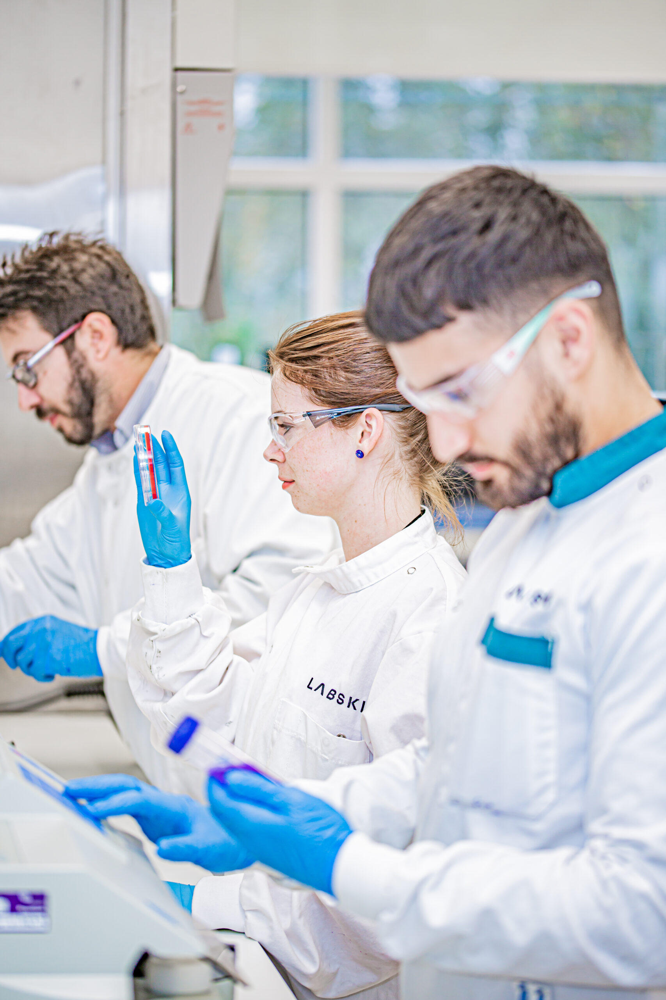

We are the specialists in human skin microbiology
Combining advanced human skin models with scientific expertise, Labskin helps researchers and innovators better understand skin biology, microbiology and product performance.
Discover Our Story
Built to behave more like real human skin
What makes Labskin unique? In short, the way it is constructed. A full-thickness dermis and epidermis allows the production of antimicrobial peptides (AMPs) and naturally produced proteins within the skin model.
Combined with a thick and dry stratum corneum, Labskin can support a full skin microbiome on its surface, including bacteria, yeast, fungi and viruses — creating a powerful platform for human-relevant skin research.